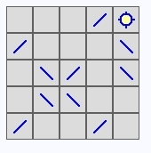
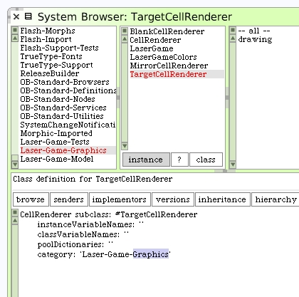

Progress So Far
Here's an interesting thought for our game development. It might be fun to show the path of the laser beam when it's activated, and we still need to write that code, but it's an interesting mental exercise if, for now, the game only showed the resulting target cell becoming On or Off depending on how the mirrors were placed.
Let's explore some other features we will need for our game as we get closer to make our first operational LaserGame morph. It's also a good time to do some Squeak image management and code tweaks.
The first thing I'd like to do is recategorize some of the classes. The cell rendering class hierarchy is very specific to the graphics. They should be moved to that system category.
That's actually easy to do. Select each class and then in the class definition pane, change the category.
You can see which classes were moved to the graphics category.
Also, if you haven't done so yet, now would be a good time to save your Squeak image. Call up "save" from the World Menu.
Part of the process of saving the image will cause the drawn form to become erased. But that's okay. You can always redraw it by running the workspace code again.